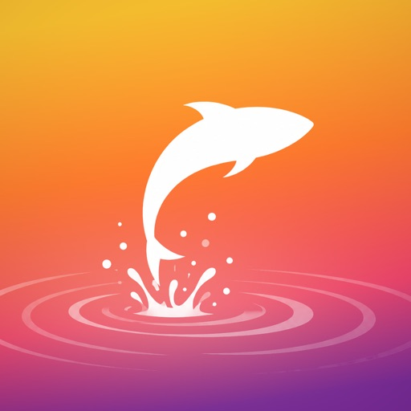
まん中のボタンを押すだけで、時間・歩いたルート・潮・天気が自動で残る。記録がたまるほど、自分がどの潮・どの時間・どのルアーで釣っているかが見えてきます。
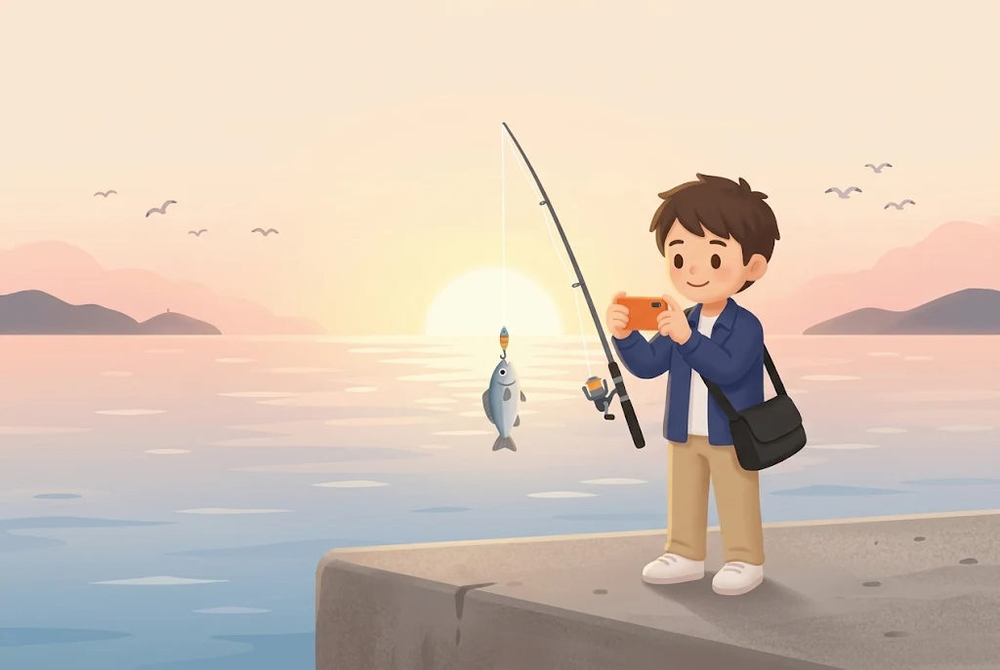
時合いの連発中に、メモなんて打っていられない。帰ってからでは、もう細かいことは思い出せない。
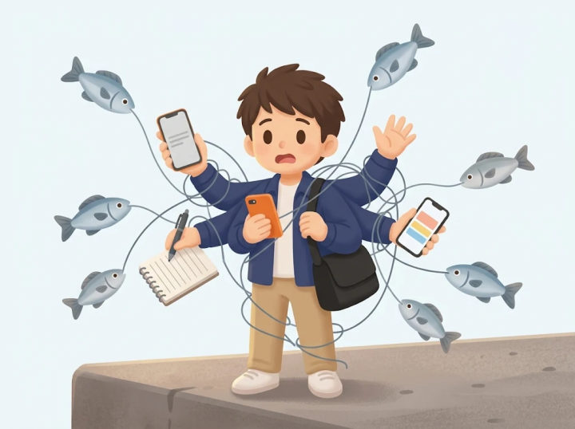
釣れている間は手が離せず、つけ忘れたまま帰ってしまう。
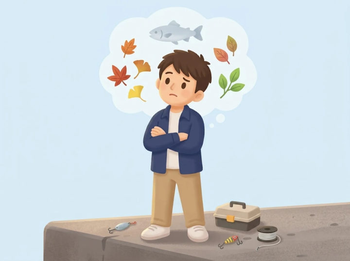
同じ場所に何年も通っていても、去年の同じ時期の記録が見つからない。
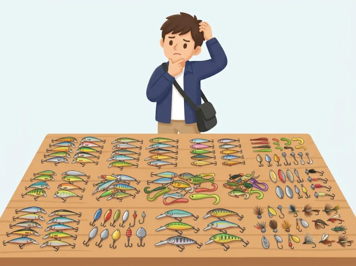
どれが本当に釣れているのか、なんとなくの「信頼ルアー」しか分からない。
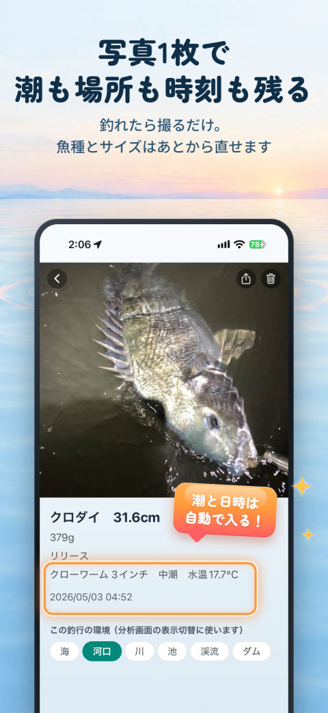
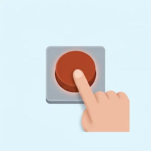
ホームの丸いボタンを押すと釣行がはじまり、もう一度押すと終わります。釣り場で打ち込むのは、釣れたときの写真1枚だけ。
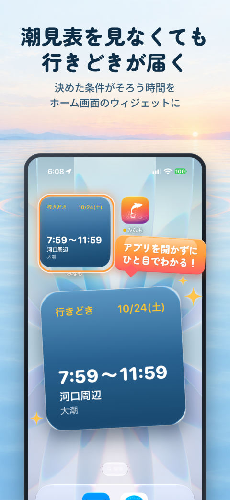
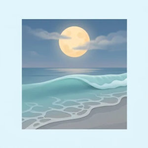
お気に入りの釣り場に「大潮で、満潮と朝マヅメが重なって、風が5m以下」のような条件を決めておくと、そろう時間を探して知らせます（みなもプレミアム）。
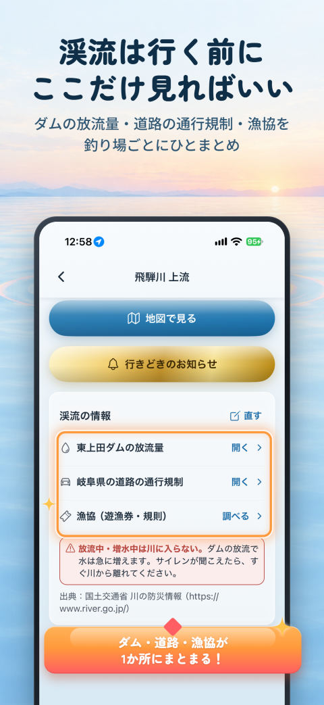
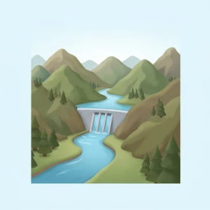
釣り場に「いつも見るダム」を登録すると、放流量のページがボタン1つで開きます。
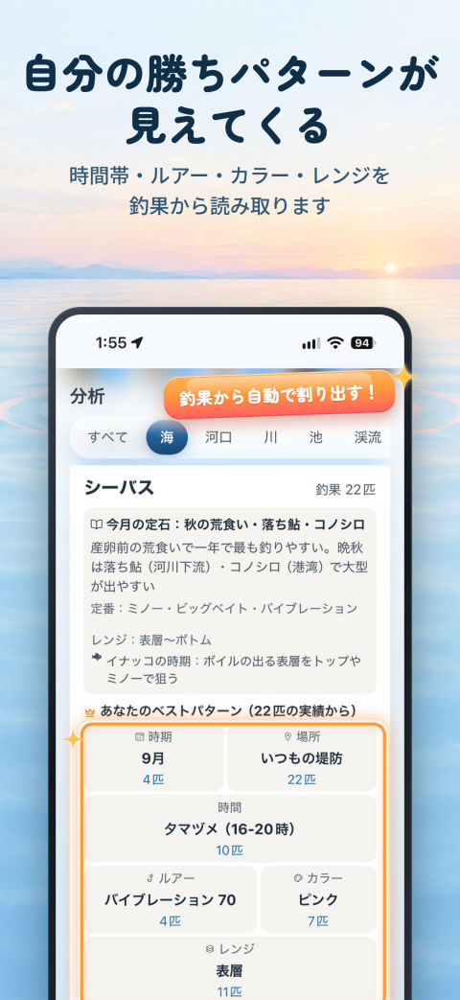
釣れた時間帯・潮まわり・季節を、海・河口・川・池・渓流・ダムごとにグラフに。何が読み取れて次にどうすればよいかを、言葉で添えます。
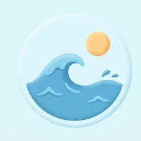
行きたい日を選ぶと、満潮・干潮の時刻と天気をカレンダーで確認できます（天気は10日先まで）。
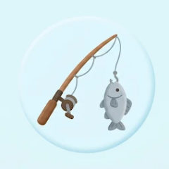
釣行がはじまれば、潮も場所も時刻も自動で残ります。
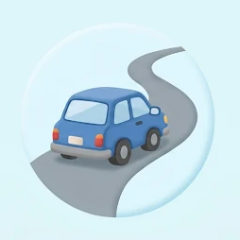
帰りの車でも翌日でも、ゆっくり直せます。
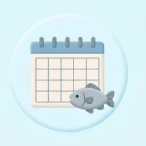
去年の同じ週に釣れていたら、金曜18時にお知らせします。設定から止められます。
どこで何が釣れたかを、地図で見返せます。
魚種ごとの自己ベスト一覧と、今年の釣りまとめ。
使った回数と釣れた数から実績が出て、在庫の減りもわかります。
「解禁まであと12日」と出て、解禁の前にお知らせ（お知らせはみなもプレミアム）。
海・河口・川・池・渓流・ダムごとの一般的な考え方をまとめています。
機種変更や万一に備えて、設定からデータを書き出せます。
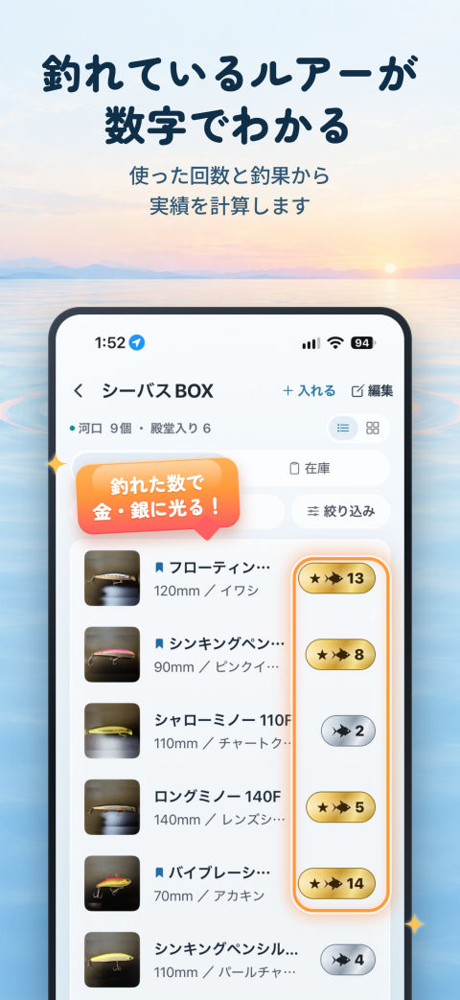
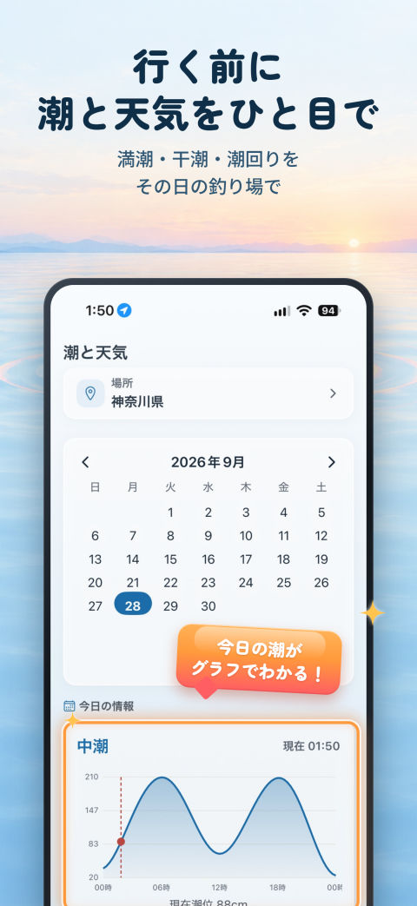
ダウンロードしてから30日間は、すべての機能をそのまま試せます。お試しが終わっても自動で課金されることはなく、記録がなくなることもありません。
記録の件数に上限はありません
一度お支払いいただければ、そのあと料金はかかりません
・潮汐は最寄りの観測港の計算値、天気は Apple の天気の予報で、どちらも参考値です。行きどきのお知らせは釣れることを保証するものではありません。
・引き上げのタイミングなど安全に関わる判断は、気象庁の公式情報と現地の状況を必ずご確認ください。
アカウント登録もログインも要りません。
釣果・写真・GPSの記録は端末の中だけに保存され、外部に送信されません。
買い切りなので、一度お支払いいただければ料金はかかりません。
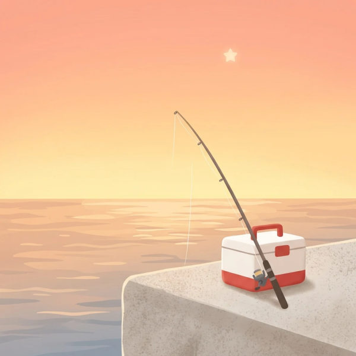